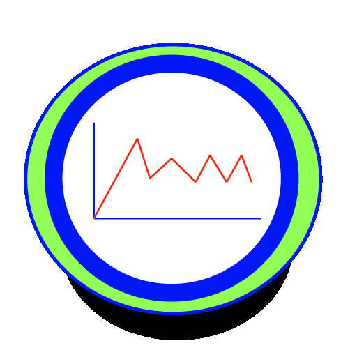

9B Metrics v. 1.1
An application to monitor your Ninebot One
by Paco Gorina
E-mail : fgorina@mac.com
Source code is available at GitHub
according to a GPL-3.0 License.

Documentation is available at http://www.gorina.es/9BMetrics
Includes code from Zip from Roy Marmelstein subjected to a MIT License